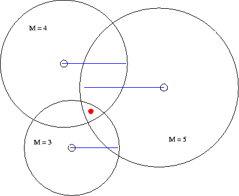
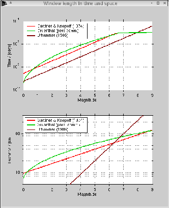

Nächste Seite: Declustering
Aufwärts: Declustering by using spatial
Vorherige Seite: Declustering by using spatial
Method
The windowing technique based on the ideas of Knopoff & Gardner [2] and Gardner & Knopoff [1] to identify clustered events is implemented as follows. For the earthquakes in the current catalog, a search is conducted for subsequent earthquakes that both fit within the magnitude dependent time and distance intervall. As distance intervall, a circle of radius l is used. Any quake within this circle and the specific time window is labelled as aftershock. The filter is used for each earthquake in the catalog except for those already labelled as aftershock. In case there is an event in the windows that has a bigger magnitude than the actual event, the window is resized using the higher magnitude but still starting at the date and location of the first detected event. The event with the highest magnitude in each cluster is labelled as the mainshock of the cluster. If there are two or more earthquakes in a cluster having the maximum magnitude, the algorithm defines the first of those earthquakes in time as the mainshock. Resizing the window of a certain aftershock sequence also requires to take into account the time difference between the originally chosen event and the biggest aftershock in the sequence. In order to adjust this, the time window is first accomodated to the magnitude of the biggest aftershock in the sequence and then the time difference between the biggest aftershock (which will be the mainshock of the cluster later on) and the originally chosen event is added, thus not loosing events of the cluster. Using the resizing technique, foreshocks and aftershocks are treated in the same way.
Additionally in some cases, events are found as aftershocks of different mainshocks. This is illustrated in Figure 1, showing the aftershock (red dot) falling into the spacial (black circle) and temporal (blue line) window of three different other earthquakes. In this case, the aftershock is added to the sequence in which it was first detected, thus to the earliest mainshock in time.
Abbildung 1:
Schematic scheme of assigning aftershocks to a certain mainshock. Red dot is the aftershock, small circles represent hypocenters of mainshocks, thick and bigger sized black circles represent spatial window of the aftershock zone and blue lines represent the time window length.
|

|
The declustering algorithm yet does not include a definition of a minimum magnitude threshold. It might be worthwhile exploring the influence of using e. g. the time dependent magnitude of completeness Mc as threshold, but this needs still to be investigated.
As the sizes of the time and space windows is crucial for the selection of aftershocks, we have implemented several time window suggestions from different authors, i. e. Gardner & Knopoff [1], Grünthal (pers. comm.), and Uhrhammer [3]. Others, e. g. Youngs et al. [4], exist, but are not implemented. The time dependence of the specific windows illustrated in Figure 2 were interpolated from the tables given in the cited publications or taken from graphs.
Abbildung 2:
Top: Time window length vs. magnitude. Bottom: Spacial window length vs. magnitude.
|

|
Nächste Seite: Declustering
Aufwärts: Declustering by using spatial
Vorherige Seite: Declustering by using spatial
Jochen Woessner
2002-08-15